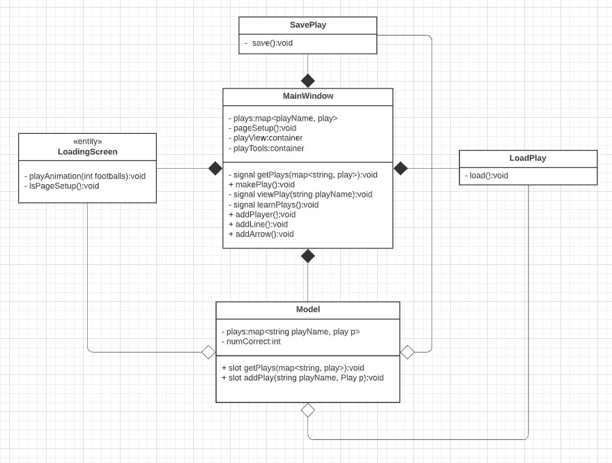

Football Playmaker
This football player maker was a group project, comprised of 4 team members. The project was done entirely in QtCreator in C++. Users could place markers for players and animate a pattern that players would move in. Users could also view plays which were saved in JSON and upload question banks in CSV format.
Documentation
The below image is a UML document from the design phase.
The two links are byproducts of the agile development process. Both are Google documents.
The attached video is from an early rendition. After a corrupted hard drive, the project was lost, but a teammate found this recording.